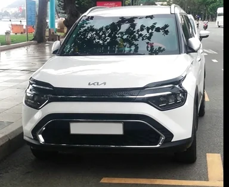
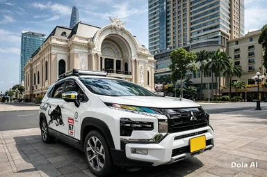
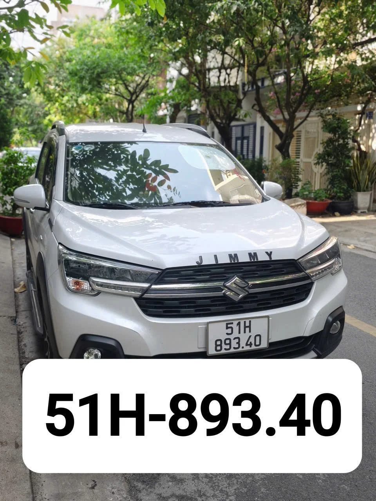
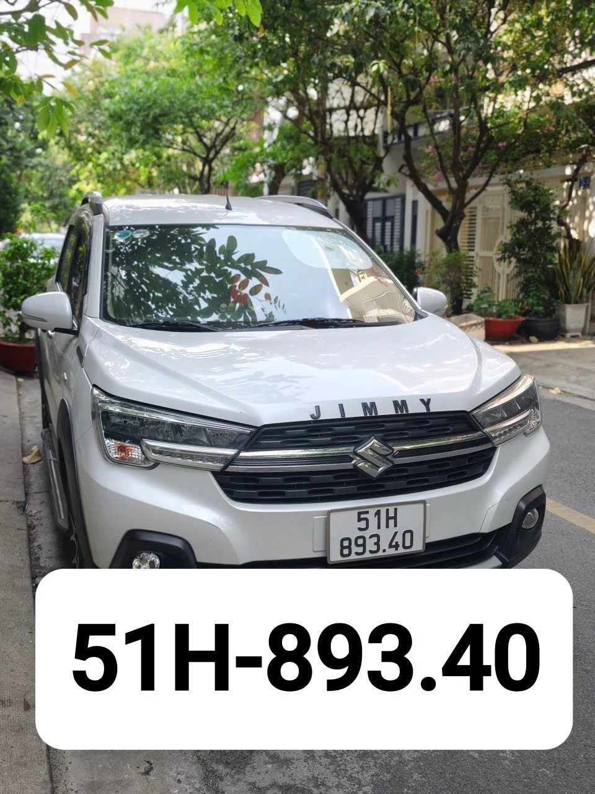

🚗 Thuê xe Thuận An đi Tây Ninh có lái – xe 4 chỗ & 7 chỗ
Thuê xe Thuận An đi Tây Ninh là dịch vụ xe riêng có tài xế, phù hợp khách đi hành hương Núi Bà Đen, tham quan Tòa Thánh Tây Ninh, công tác tại Mộc Bài, đi Trảng Bàng, Dương Minh Châu, Tân Châu, Suối Dây, Suối Ngô hoặc cửa khẩu Xa Mát.
Trang này gộp hai nội dung xe 4 chỗ và xe 7 chỗ thành một trang tuyến Tây Ninh để khách dễ chọn xe theo số người, hành lý và mục đích chuyến đi. Dịch vụ nhận đón tại các khu vực Thuận An như Bình Chuẩn, Lái Thiêu, An Phú, Bình Nhâm, Thuận Giao, Bình Hòa, Vĩnh Phú và Hưng Định.
Nếu bạn đang tìm giá thuê xe Thuận An đi Tây Ninh, hãy gửi ngày đi, giờ đón, địa chỉ tại Thuận An, số người và điểm đến cụ thể. Giá thực tế được xác nhận theo hành trình, loại xe và một chiều hay đi về.
🚗 Hình ảnh xe phục vụ tuyến Thuận An → Tây Ninh






Ảnh và đường dẫn ảnh được giữ từ hai trang gốc; không tạo ảnh mới.
🔎 Nên chọn xe 4 chỗ hay 7 chỗ đi Tây Ninh?
| Tiêu chí | Xe 4 chỗ | Xe 7 chỗ |
|---|---|---|
| Nhóm khách | 1–3 người + hành lý | 4–6 người + hành lý |
| Ưu điểm | Gọn, phù hợp nhóm nhỏ, tối ưu chi phí | Rộng hơn, phù hợp gia đình/nhóm bạn |
| Xe trong nội dung gốc | Toyota Vios | Toyota Innova, Mitsubishi Xpander, Toyota Veloz Cross, Hyundai Stargazer |
| Phù hợp tuyến | Núi Bà Đen, Tòa Thánh, Mộc Bài, Trảng Bàng | Núi Bà Đen, Tòa Thánh, Mộc Bài, Trảng Bàng, Suối Dây, Suối Ngô |
Gợi ý: 1–3 người có ít hành lý có thể chọn xe 4 chỗ; gia đình hoặc nhóm đông hơn nên chọn xe 7 chỗ để có thêm không gian.
📍 Các điểm đón tại Thuận An và điểm đến Tây Ninh
Đón tại Thuận An: Bình Chuẩn, Lái Thiêu, An Phú, Bình Nhâm, Thuận Giao, Bình Hòa, Vĩnh Phú, Hưng Định.
Đi Tây Ninh: Núi Bà Đen, Tòa Thánh Tây Ninh, Mộc Bài, Trảng Bàng, Dương Minh Châu, Tân Châu, Suối Dây, Suối Ngô và Xa Mát.
Với các địa chỉ cụ thể trong hẻm hoặc nhiều điểm đón, khách nên gửi địa chỉ trước để xác nhận lộ trình và thời gian đón.
Tại sao nên thuê xe 4 chỗ riêng Thuận An Bình Dương đi Tây Ninh?
Thuê xe 4 chỗ Thuận An đi Tây Ninh là lựa chọn lý tưởng cho đi hành hương Núi Bà Đen, tham quan Tòa Thánh Cao Đài, công tác Cửa khẩu Mộc Bài, du lịch Suối Dây Suối Ngô. Xe riêng Toyota Vios đón đúng giờ tại nhà, đi thẳng mọi điểm — không chờ ghép khách, chủ động hoàn toàn.
Khoảng cách 60–90km, đi Quốc lộ 22 chỉ ~1–1.5 giờ. Đặt xe hôm nay có thể đi ngay. Giá không đổi cuối tuần & ngày lễ.
💰 Bảng giá thuê xe 4 chỗ Thuận An Đi Tây Ninh
Giá trọn gói không đổi — bao gồm xăng xe, phí đường bộ, tài xế. Không có chi phí ẩn:
| 📍 Điểm đến tại Tây Ninh | 🚗 1 Chiều | 🔄 Đi Về Trong Ngày | ✅ Đặt Xe |
|---|---|---|---|
| Trảng Bàng Huyện Trảng Bàng — gần nhất |
600.000đ | 1.100.000đ | |
| Cửa khẩu Mộc Bài Thương mại, visa, cửa khẩu quốc tế |
750.000đ | 1.300.000đ | |
| Thành phố Tây Ninh Trung tâm tỉnh, cơ quan, nhà riêng |
850.000đ | 1.500.000đ | |
| Núi Bà Đen Khu du lịch tâm linh, cáp treo, chùa |
850.000đ | 1.500.000đ | |
| Tòa Thánh Tây Ninh Tòa Thánh Cao Đài, khu trung tâm |
850.000đ | 1.500.000đ | |
| Dương Minh Châu Huyện Dương Minh Châu, vườn quốc gia |
800.000đ | 1.400.000đ | |
| Tân Châu Huyện Tân Châu, vùng biên |
1.200.000đ | 1.900.000đ | |
| Suối Dây Khu du lịch Suối Dây, sinh thái |
1.300.000đ | 2.000.000đ | |
| Suối Ngô Khu du lịch Suối Ngô, thác nước |
1.400.000đ | 2.400.000đ | |
| Cửa khẩu Xa Mát Huyện Tân Biên, biên giới |
1.300.000đ | 2.000.000đ |
📌 Giá không đổi cuối tuần & ngày lễ · Không phụ thu đón tại các phường Thuận An · Đi nhiều điểm gọi báo giá chi tiết!
🚘 Các Dòng Xe 7 Chỗ Phục Vụ
✅ Ảnh xe thật · Đời mới 2020–2024 · Vệ sinh sau mỗi chuyến · Cốp rộng đựng đồ lễ, hoa, quà hành hương
Tại sao nên thuê xe 7 chỗ Thuận An Đi Tây Ninh?
Thuê xe 7 chỗ Thuận An đi Tây Ninh là lựa chọn hoàn hảo cho gia đình, nhóm bạn 4–7 người đi hành hương Núi Bà Đen, tham quan Tòa Thánh, công tác Mộc Bài, du lịch Suối Dây, Suối Ngô. Xe rộng rãi, cốp đựng đủ đồ lễ, hoa, quà lưu niệm — đi ~60–90km Quốc lộ 22 chỉ 1–1.5 giờ, không chờ ghép khách.
Giá chỉ cao hơn xe 4 chỗ đúng 100.000đ/chiều — tiết kiệm mà đủ cả gia đình đi cùng nhau.
💰 Bảng giá thuê xe 7 chỗ Thuận An Đi Tây Ninh
Giá trọn gói — cao hơn xe 4 +100k/chiều & +150k/đi về, đã bao gồm xăng xe, phí đường bộ, tài xế — không có chi phí ẩn:
| 📍 Điểm đến tại Tây Ninh | 🚐 1 Chiều | 🔄 Đi Về Trong Ngày | ✅ Đặt Xe |
|---|---|---|---|
| Trảng Bàng Huyện Trảng Bàng, trung tâm |
700.000đ | 1.250.000đ | |
| Cửa khẩu Mộc Bài Thương mại, làm thủ tục |
850.000đ | 1.450.000đ | |
| TP Tây Ninh Trung tâm tỉnh, UBND, chợ |
950.000đ | 1.650.000đ | |
| Núi Bà Đen Khu du lịch tâm linh, cáp treo |
950.000đ | 1.650.000đ | |
| Tòa Thánh Tây Ninh Tòa Thánh Cao Đài, khu trung tâm |
950.000đ | 1.650.000đ | |
| Dương Minh Châu Huyện Dương Minh Châu, khu nông thôn |
900.000đ | 1.550.000đ | |
| Tân Châu Huyện Tân Châu, biên giới |
1.300.000đ | 2.050.000đ | |
| Suối Dây Khu du lịch sinh thái, núi rừng |
1.400.000đ | 2.150.000đ | |
| Suối Ngô Khu du lịch, hồ nước, cắm trại |
1.500.000đ | 2.550.000đ | |
| Cửa khẩu Xa Mát Huyện Tân Biên, biên giới |
1.400.000đ | 2.150.000đ |
📌 Giá không đổi cuối tuần & ngày lễ · Xe 4 chỗ xem trang bên!
❓ Câu hỏi thường gặp
Giá thuê xe Thuận An đi Tây Ninh bao nhiêu?
Hai trang gốc hiện có mức tham khảo từ 600.000đ/chiều cho xe 4 chỗ và 700.000đ/chiều cho xe 7 chỗ. Giá cần xác nhận lại theo điểm đến, ngày giờ, loại chuyến và yêu cầu chờ.
Có xe đi Núi Bà Đen và Tòa Thánh không?
Có. Đây là các điểm đến được hai trang gốc tập trung, cùng với Mộc Bài, Trảng Bàng, Suối Dây, Suối Ngô, Dương Minh Châu, Tân Châu và Xa Mát.
Có xe đi một chiều và đi về không?
Có thể yêu cầu một chiều, đi về trong ngày hoặc lịch trình ở lại nhiều ngày. Giá được xác nhận theo hành trình thực tế.
Xe có đón tận nhà ở Thuận An không?
Có thể nhận đón tại các khu vực Thuận An nêu trên; địa chỉ cụ thể nên gửi khi đặt xe.